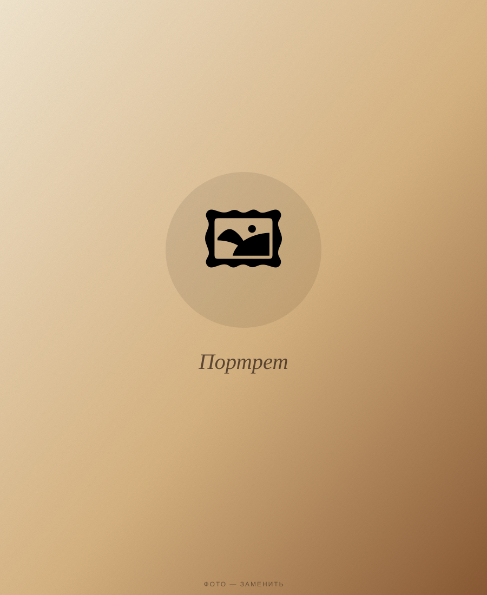
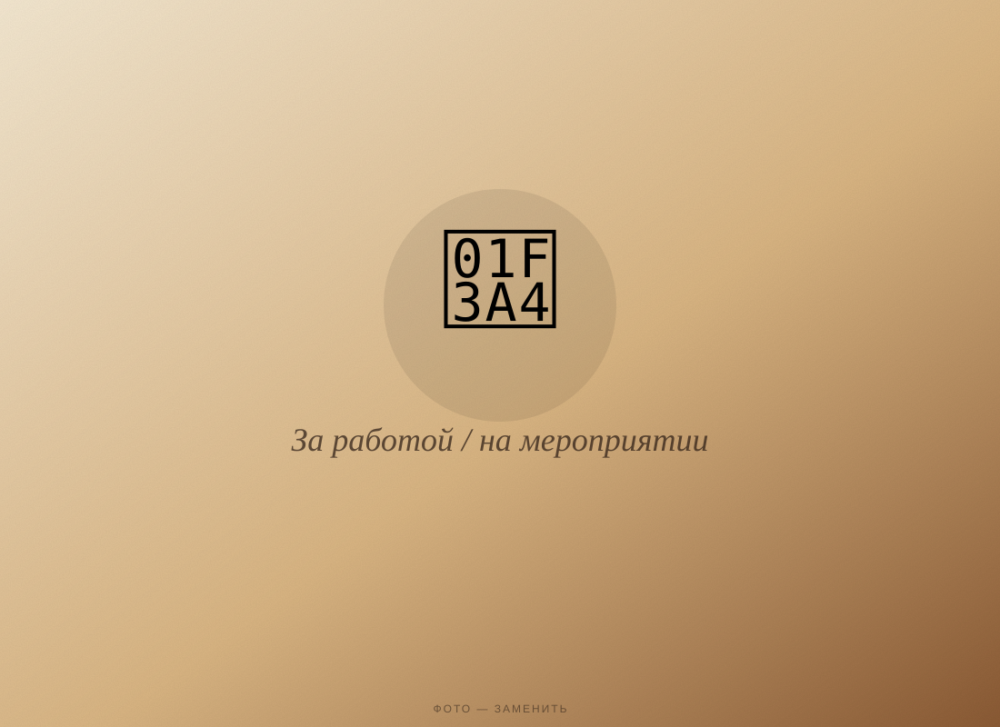
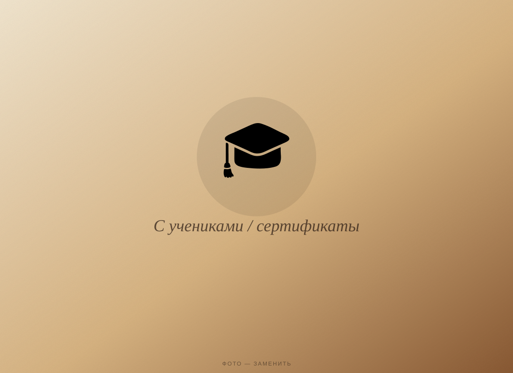
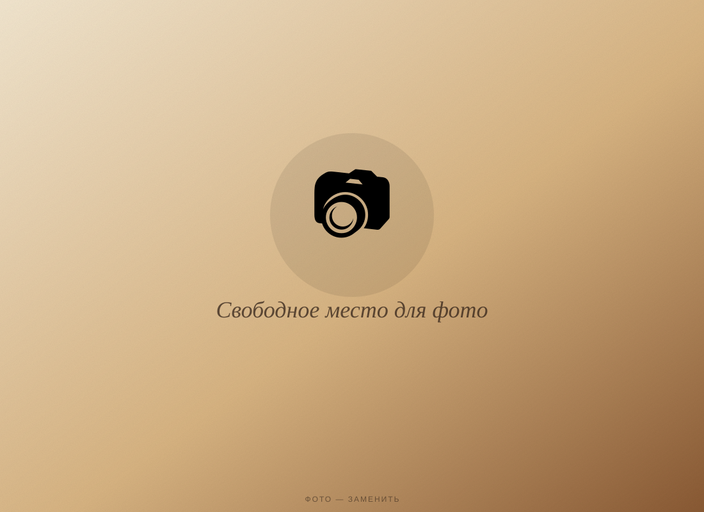

Языки — часть истории моей семьи. Ещё в детстве меня окружала атмосфера многоязычия, и с годами это переросло в профессию, которой я живу: сегодня я работаю сразу в двух направлениях — обучаю итальянскому языку и профессионально перевожу (синхронно, последовательно и письменно) для проектов международного уровня — от политических переговоров между Италией и Казахстаном до юридических, технических документов и проектов в сфере моды.

За годы практики я разработала собственный подход к преподаванию итальянского — я выстраиваю объяснение языка через прямые параллели с родным (русским) языком: ученик не просто заучивает грамматику, а понимает логику итальянского через то, что ему уже знакомо. Это ускоряет усвоение и снимает страх перед языком, который обычно кажется «сложным».
О моей методике писал журнал Forbes Kazakhstan — статья «Логика по-итальянски» рассказывает о том, как я применяю нестандартный подход к обучению языку.


Хотите говорить по-итальянски свободно?
Записаться на занятие